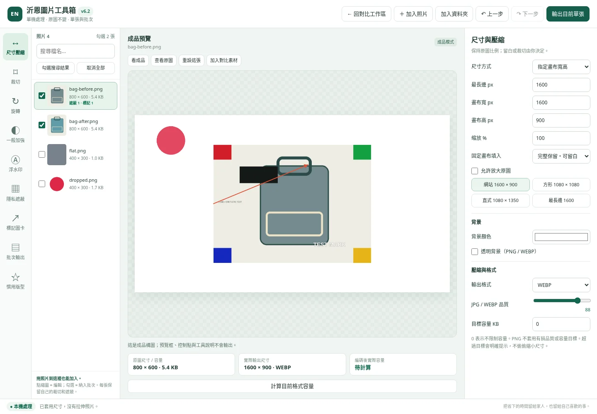

沂恩圖片工具 v6.2 使用說明
開啟
將 ZIP 解壓縮，使用 Chrome 或 Edge 開 index.html。上方按「圖片工具箱・單張 / 批次」。不需 Python、BAT、後端、帳密或安裝模型。原有對比製作仍在原本工作區。
新版工具箱採左側工具列，左邊照片清單、中間預覽、右邊目前工具設定。點「回對比工作區」可返回；兩邊共用照片清單，但各自保留自己的編輯資料。

快速單張流程
- 按「加入照片」，或把照片拖進工具箱。資料夾可用「加入資料夾」。
- 點左側縮圖，成為目前編輯照片。這不代表勾選批次。
- 選「尺寸壓縮」，依用途選最長邊、固定畫布、百分比或原尺寸。
- 需要轉正時用「旋轉」。需要去掉多餘邊緣時用「裁切」。
- 到「浮水印」啟用文字，或選一張 Logo；可在成品上拖曳。
- 有個資時到「隱私遮蔽」畫框。文字個資建議實色遮蔽。
- 按「看成品」確認構圖與遮蔽，再按「輸出目前單張」。
尺寸與壓縮
「最長邊等比縮放」將原圖最長邊縮到指定尺寸；預設不放大原圖。「指定畫布寬高」固定整張成品的尺寸，圖片本身保持比例。
- 完整保留：整張照片都保留，不足處填入背景色或透明。
- 填滿：填滿畫布，部分邊緣可能被裁掉。
- 允許放大：勾選後才允許把低像素照片放大，不代表創造真實細節。
旋轉後，等比模式會用旋轉後長寬計算。對固定畫布，不會把直圖硬拉成橫圖。
輸出格式可選 WEBP、PNG、JPG。JPG 不支援本工具的透明背景，會使用所選背景色。PNG 不使用有損品質滑桿。
目標容量填 0 表示不限制；例如填 300 表示以 300 × 1024 bytes 為搜尋目標。容量搜尋只降低 JPEG / WEBP 品質至下限 40；若仍超標會提示，不會私自改尺寸。
「計算目前格式容量」會實際編碼，顯示 KB / MB 及 bytes；設定變更後會顯示待計算。尺寸與檔案容量是兩種不同的大小。
裁切、旋轉與一般加強
裁切工具會顯示原始方向的圖片選區，不是成品。可拉四角、拖框內移位或在框外重新畫。比例可選自由、1:1、16:9、4:5、3:4、4:3。按「完成選區 → 看成品」檢查結果。
旋轉提供左右 90°、任意角度及水平／垂直鏡像。一般加強提供亮度、對比、飽和度及銳利化；「恢復原貌數值」會把這四項回到預設值。
清洗成果建議保持前後影像條件可比較，不把調色或修圖說成清洗效果。本版沒有 AI 放大、失焦修復或 AI 自動去背。
文字與 Logo
文字與 Logo 分別有位置、大小及不透明度設定。勾選顯示後，在「成品預覽」拖動物件本體移動，拖右下角縮放。
文字可用一鍵靠左下、置中、靠右下。位置百分比代表物件可移動的範圍，不是把文字中心硬放到畫布邊緣。Logo 等比縮放。
Logo 支援 PNG、JPG、WEBP，單張上限 10 MiB、1600 萬像素。Logo 圖檔本身只存在本次分頁，不會放進慣用版型 JSON。
隱私遮蔽
在原圖上畫遮蔽框或按「新增框」，點框選取。框內可拖移、四角可縮放；按「複製選取」新增第二個同樣的框，「刪除」只刪目前選中的框。
方式有全不透明實色、模糊、馬賽克。輸出時，遮蔽位置會隨圖片裁切與旋轉一起轉換，不會因批次處理被略過。
請對姓名、電話、地址使用實色遮蔽；模糊與馬賽克不提供無法復原或識別的保證。畫面中的「查看原圖」會顯示未編輯照片，僅供核對，輸出仍然依照設定遮蔽。
每張最多 40 個遮蔽框。正式分享前，請放大檢查輸出檔案是否仍有可辨認個資。
標記圖卡
可增加箭頭、矩形框、圈選與圖上文字，設定顏色。先按「新增標記」，再在成品上拖曳位置或右下角縮放。單張最多 40 個標記。
這些是成品排版，不是原圖分析。改了裁切或旋轉後，請核對箭頭是否仍指向正確地方。
勾選批次
左邊每張有勾選框，只有勾選的照片會輸出。點縮圖只是切換目前編輯照片。可先搜尋檔名，再按「勾選搜尋結果」；「取消全部」會取消所有勾選。
每張都保留自己的設定。先把某張調好，勾選其他照片，按「將目前通用設定套到勾選照片」，可統一尺寸、格式、調色及浮水印。各張裁切、遮蔽與標記不會被別張選區覆蓋。
按「輸出勾選照片 → ZIP」。批次最多 80 張、合計輸出上限 256 MiB。檔名重複會加編號，ZIP 附 export_report.json。報告包含成功／失敗、尺寸、bytes、局部編輯數與容量警告；報告也含原檔名，分享前請確認檔名沒有個資。
處理中可按「停止批次」，會在目前編碼完成後停止，沒有產出不完整 ZIP。批次不修改原始檔案。
工具箱慣用版型
先調整好目前照片的通用設定，再到「慣用版型」輸入名稱，按「儲存目前通用設定」。最多 12 組；同名會先詢問覆寫。
會儲存尺寸、格式、品質、旋轉、一般加強、文字、Logo 位置等通用參數；不儲存照片、Logo 圖檔、裁切、遮蔽或標記。
可匯出／匯入 JSON 備份。這是圖片工具箱自己的版型，與對比工作區的慣用版型不同。舊對比版型仍在原工作區使用。
本機 HTML 的 localStorage 儲存方式可能依瀏覽器和檔案位置不同而改變。清除網站資料、換瀏覽器或檔名後不能假設版型仍在；請先匯出 JSON。若看到「僅暫存分頁」，務必在關閉前匯出。
與對比工作區搭配
單張修整完成後可按「加入對比素材」。程式會產生一張已處理的 PNG 加入照片清單，原圖仍保留。回對比工作區後，把新圖指定為洗前或洗後即可。
原對比工作區的 WEBP / PNG / SVG、標題、店名、背景橫條、批次對比、旋轉鎖定、安全框、FB / IG 比例模擬沿用。SVG 是內嵌 PNG，不是可拆開編輯的向量稿。
快捷鍵
| 按鍵 | 工具箱操作 |
|---|---|
| Ctrl + Z | 上一步 |
| Ctrl + Y / Ctrl + Shift + Z | 下一步 |
| Delete / Backspace | 刪除選取的遮蔽或標記 |
| Ctrl + D | 複製選取的遮蔽框 |
| 方向鍵 | 微調選取的裁切、遮蔽或標記 |
| Shift + 方向鍵 | 較大幅度微調 |
| Esc | 回對比工作區；編碼中需先等待或停止 |
在文字、數字輸入欄內，Delete 和方向鍵保留原本的輸入行為，不會誤刪遮蔽框。
保存與限制
照片和工作內容只在目前分頁。切換照片會保留各自設定，但關閉或重新整理後不保留。慣用版型不是完整專案保存，請在關閉前輸出圖片。
單張輸入上限 50 MiB、6000 萬像素；整批來源上限 256 MiB、合計 1.2 億像素與 256 張。最終輸出單邊上限 8192 px、總像素 2000 萬。設定 JSON 上限 1 MiB。
支援 JPEG、PNG、WEBP、BMP，GIF 固定載入時一幀。HEIC、TIFF、SVG 等不直接匯入，請先轉換。工具箱沒有 AI 自動去背或網頁轉圖片。
只有故意點選正式網站或 GitHub 連結才會離開工具；圖片編輯流程沒有外部 API、CDN、模型下載或主動網路傳輸。仍需注意瀏覽器擴充套件、電腦本身與自行分享的輸出檔安全。
檔案在哪裡
輸出會交給瀏覽器下載，通常在瀏覽器設定的下載位置。按 Chrome / Edge 的下載清單查看；不是 BAT 版原來的 output 資料夾。
這個 ZIP 內已包含 index.html。要更新 GitHub Pages，請看同資料夾的 DEPLOYMENT.md。不要只把整個 ZIP 上傳，Pages 不會把 ZIP 自動解開當成工具。
希望這個工具能幫助相關產業的各位節省時間，把省下的時間留給家人，也留給自己喜歡的事情。